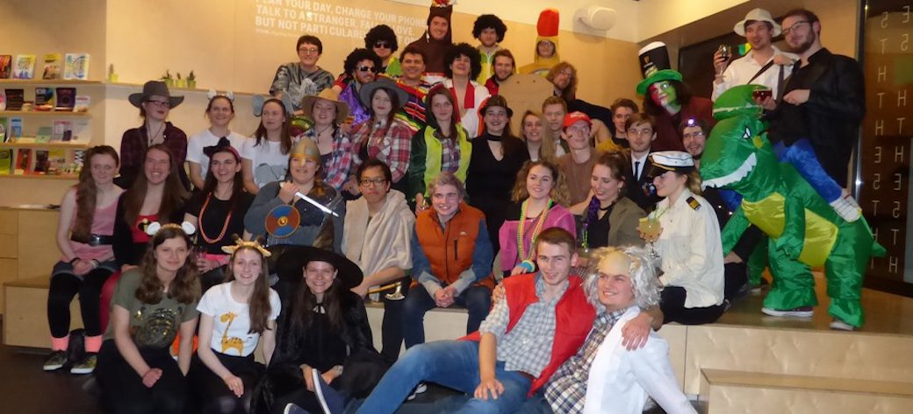

Tour 2019 - 3 cities in 3 days
This year Concert Band are off to Europe once more with the destination of Colmar!
This location allows the band to visit three cities in three different countries in just three days, performing in each as we travel through France, Switzerland and Germany.
Band members can find more information through the Facebook group and at rehearsals by asking our Tour Secretaries for more information!
Tour 2018 - Amsterdam & Utrecht

Some of our band were lucky enough to spend 5 days touring the Netherlands. We played three concerts at The British School of Amsterdam, ZIMIHC Theatre and the Dr Sarphatihuis Retirement Home. The band was conducted by our assistant conductors; Declan Flannery and Sophie Blundell alongside James Atkins - former assistant conductor. Whilst we were there we went on a boat tour through the Amsterdam Canals, visited the Heineken Experience and ran through Utercht on our annual scavenger hunt. As with all our tours we celebrated our 'Repertoire Night' by dressing in costumes related to the pieces we have played that year and heading out into the city on a pub crawl. It was a great experience for all involved and are looking forward to our next Tour.